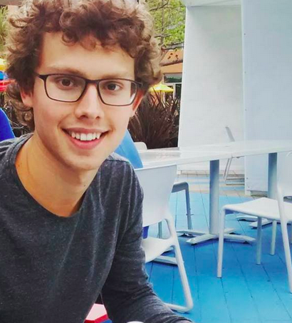

Student Applied Physics and Computing Science.
Last updated: May 2016. Thanks to Skeleton for their HTML & CSS framework.
Born and raised in the northern part of The Netherlands. I have finished a bachelor in Applied Physics recently, and am currently working on my graduation thesis for Computing Science, on a novel Virtual Reality application for medical education. As an extracurricular experience, I attended Stanford University's 2015 summer session, taking courses in entrepreneurshop, data mining and computational mechanics.
I started programming in 2007 when I built MedievalGuild, an online text-based game, which quickly grew into a small business. Two years later I built another online game, exploited by BoGames, together with a business-oriented friend. This turned out to be of a larger scale and we attracted many players, which resulted in some very interesting technical and business challenges, and a profitable company.
Nowadays I am running Mobiyou, which offers a whole range of internet-based services to small and medium-sized businesses. Next to this and my studies, I've taken some teaching assistant positions to strengthen my soft skills and for the satisfaction of helping students learn new skills.
My current interest lies on the more high performance side of the computing science. In the past year I've spend quite a lot of time on learning (multithreaded) C++ and applying it in computer graphics (e.g. a simple raytracer, and my current thesis project with Open Scene Graph). I've also implemented my first GPU programs using OpenGL and am eager to learn more about that.
In my spare time I'm an avid handball player and do some voluntary work for the club I'm playing at, like refereeing, organizing tournaments and maintaining the website.
Mobiyou offers a wide range of internet related services to small businesses, such as webdevelopment, SEO strategies and online marketing. I'm mainly concerned with the technical implementations and acquiring new customers.
BoGames exploited Mafiaroots, an online text-based mafia game. I implemented all the features and maintained the servers on which the game was deployed. The game was developed using the well known Linux / Apache / MySQL / PHP stack. The game attracted some 3,500 monthly active players, which made it one of the largest games of this genre in The Netherlands.
MedievalGuild was my first programming project: an online text-based game developed with the LAMP stack. It attracted some 500 monthly active players and became my first business.
Some projects I've been working on recently:
Currently working on an application for medical education using the zSpace device. Students have to assemble body parts at the correct position in 3D space. My job is to develop the application and, when done, test it with students to see how they react to the new Virtual Reality technique. The implementation language is C++ and the graphics framework Open Scene Graph is used.
I implemented a digital image correlation algorithm in Matlab, which was used to approximate 3D topography for scanning electron microscopy (SEM) images. The algorithm boils down to an iterative optimization problem in six dimensions, as described in the report in the repository. The program takes two SEM images, in which the samples are slightly moved, and approximates the displacement of every feature in the images.
A multithreaded raytracer in C++. It is still very basic but I'm planning on extending it with more shader features like reflection and refraction, if time allows. In the end I want to implemented the photon mapping technique to simulate light physics more naturally.
The aim of the project was to learn about distributed computing over the web. I implemented an Android application that generated heatmaps of sports players during matches, which can be viewed through a web interface. The implementation language is Java and the network techniques used were UDP sockets, RabbitMQ, Rest API's and Java Servlets.